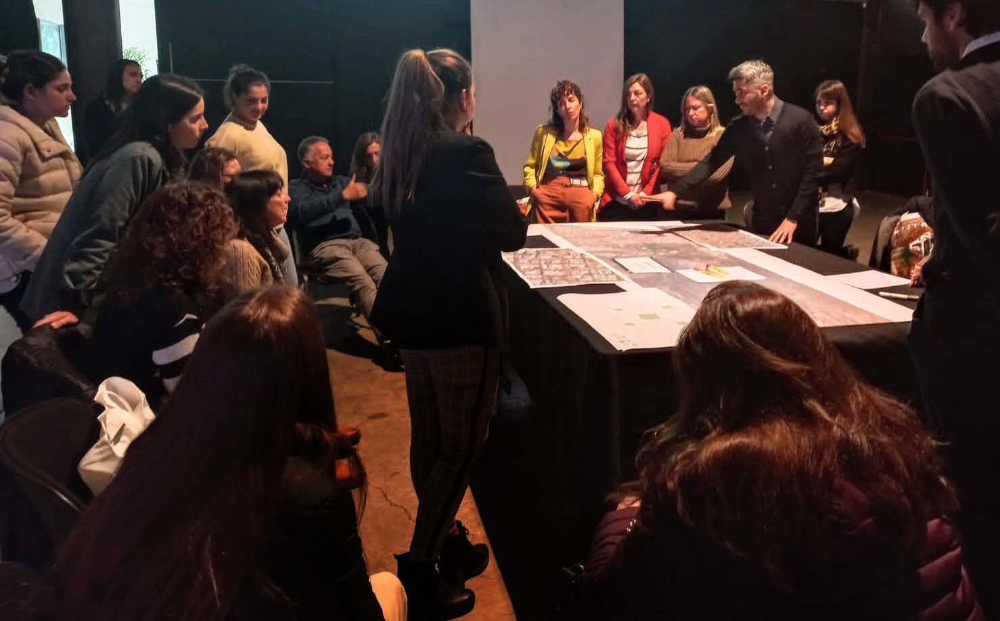

Antonio Vazquez Brust
Urban Data Scientist
Hi there! I’m Tony, an Urban Data Science consultant, researcher and educator. I specialize in the application of novel analytical tools and emerging technologies to better understand and plan our cities.
Read More →
